I · 06 outils
Astronomie
- CASA
- SAOImage DS9
- Astrometrica
- Interférométrie radio
- VLBI
- Données FITS
✦ Chapitre II
To the moon and back;
Étudiante en Master 2 d'Astronomie et Astrophysique à l'Université d'Antananarivo et formée par le programme DARA, j'analyse les données du ciel, du visible à la radio, et j'explore l'apport du machine learning à la radioastronomie.
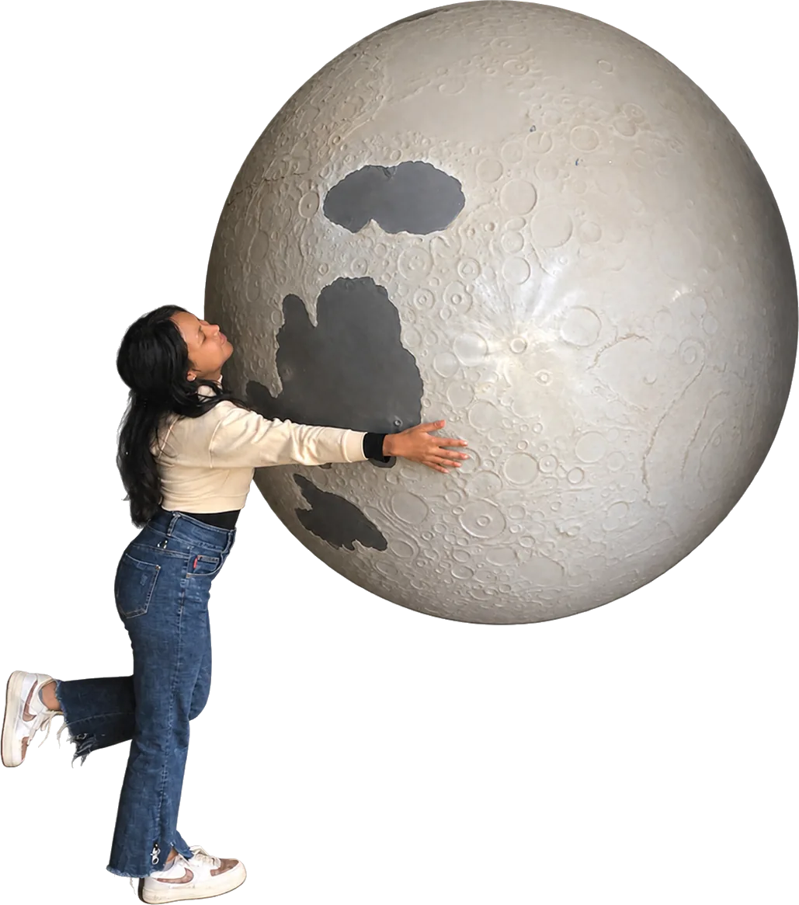
M2
Astronomie & Astrophysique · Univ. d'Antananarivo
DARA
Formation en radioastronomie · 2025 – 2026
2
Astéroïdes provisoires · Pan-STARRS
2
Conférences en 2026 · Afrique du Sud, Madagascar
✦ Formation & recherche
De la formation d'enseignante à la radioastronomie : les étapes qui m'ont menée vers le ciel.
En cours
Université d'Antananarivo
Cours de galaxies, cosmologie, programmation Python et Linux.
Juin 2026
Mars 2026
Afrique du Sud
Participante à la rencontre annuelle du réseau de radioastronomie DARA.
Août – sept. 2025
Avec Sciences Physiques et Avenir
À la tête d'une équipe de 4 : 2 astéroïdes candidats provisoires, LFS1400 et NSF1206.
2025 – 2026
Madagascar · Kenya · Afrique du Sud
2021 – 2024
École Normale Supérieure (ENS) · Antananarivo
Obtenue avec mention (14/20) : le socle scientifique de tout ce qui a suivi.
✦ 18 août – 12 sept. 2025 · IASC
Pan Africa Asteroid Search Campaign : une équipe de quatre de Sciences Physiques et Avenir, que je dirigeais, a analysé des images Pan-STARRS avec Astrometrica pour repérer les objets qui se déplacent parmi les étoiles.
| Provisoire | Objet | Statut |
|---|---|---|
| P12ddwJ | LFS1400 | Préliminaire |
| P12ddwH | NSF1206 | Préliminaire |
Signalés le 19 août 2025 · R. Francia, N. Fandeferana, R. Laurence, I. Christinah · Sciences Physiques et Avenir, Madagascar.
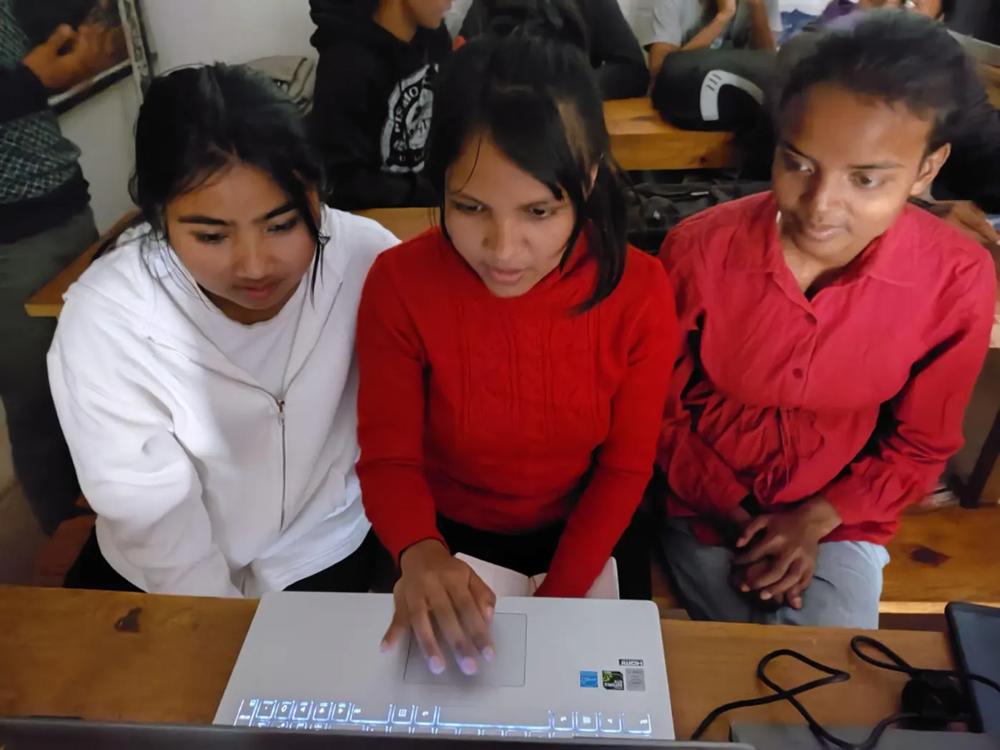
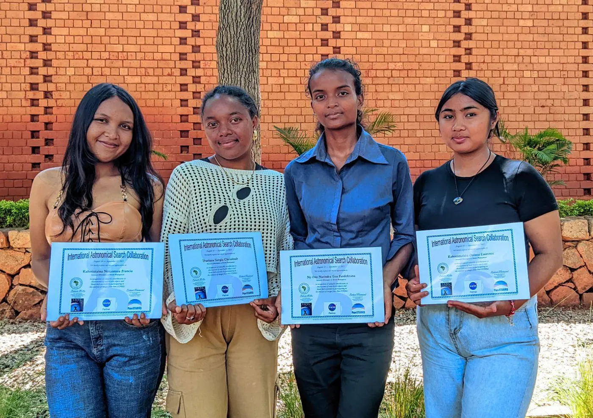
✦ DARA · Kenya
Formation pratique en astronomie optique, de la préparation d'une observation jusqu'au traitement des données.
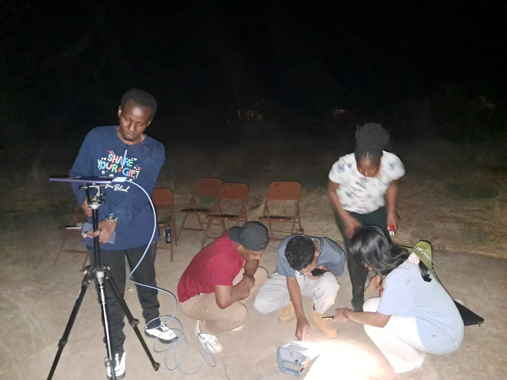
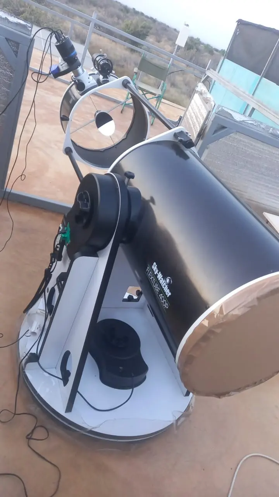
✦ DARA · Afrique du Sud
Formation pratique en radioastronomie à l'observatoire de Hartebeesthoek (HartRAO) : radiotélescopes et récepteurs, observations en antenne unique et en interférométrie, techniques VLBI.

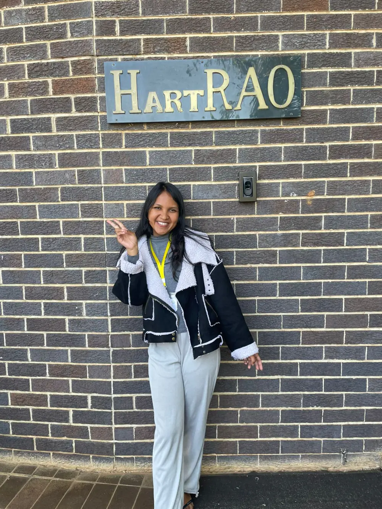
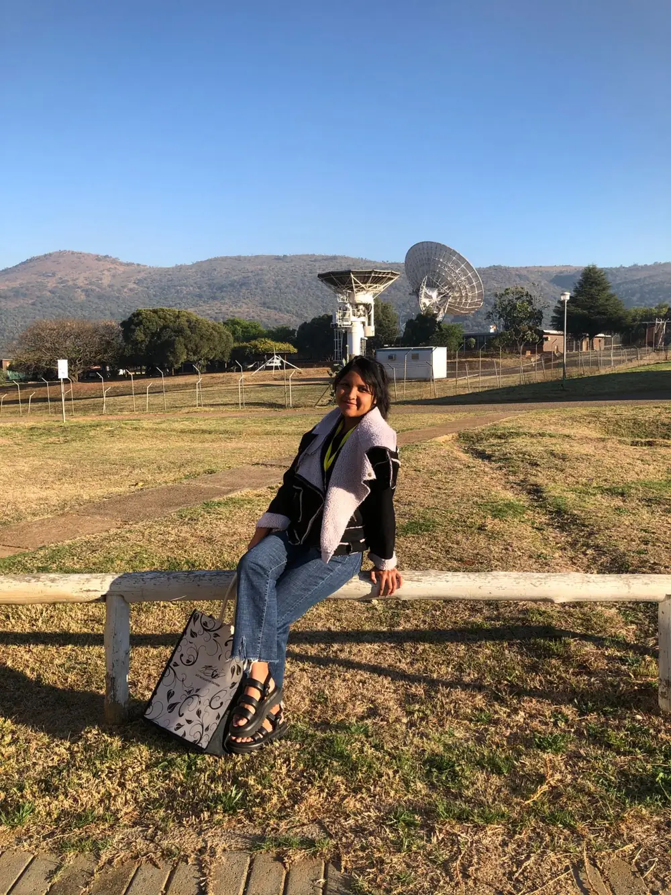
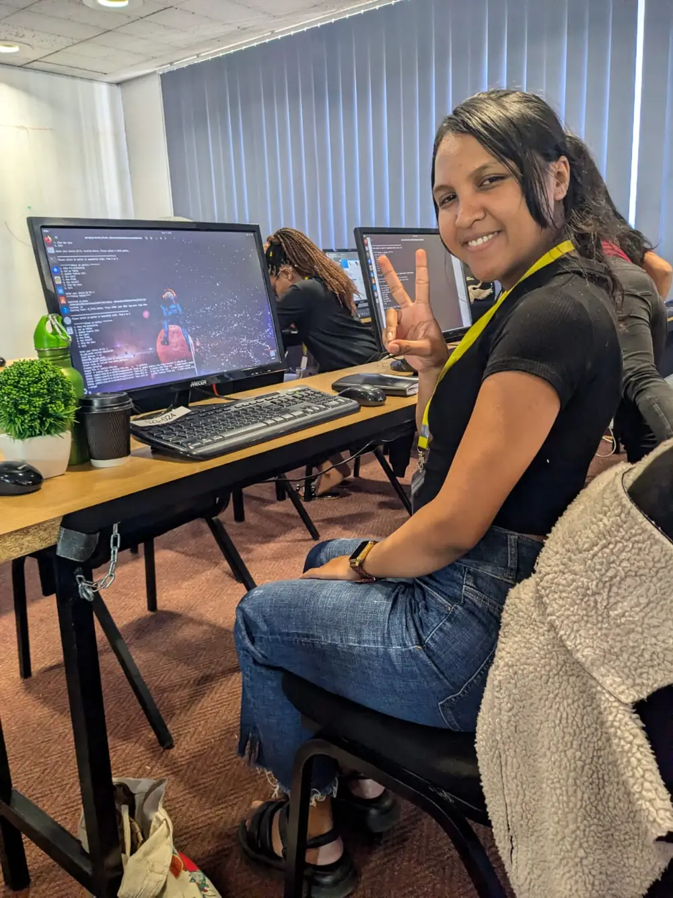
✦ DARA · 2025 – 2026
Une année de formation entre Madagascar, le Kenya et l'Afrique du Sud, récompensée : la cohorte malgache DARA 2025 reçoit ses certificats.
Aux côtés du Prof. Solohery Randriamampandry, notre professeur à l'Université d'Antananarivo.
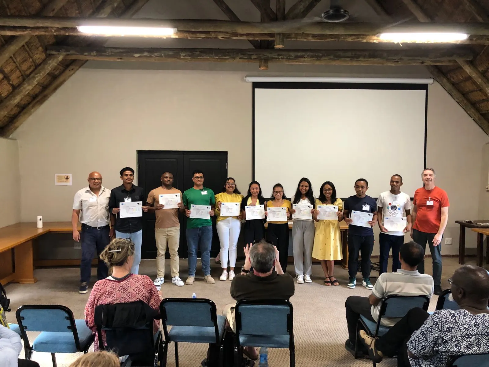
✦ Juin 2026 · Université d'Antananarivo
Atelier d'installation du premier Transient Array Radio Telescope (TART) de Madagascar : un radiotélescope open source qui observe tout le ciel en continu, satellites, objets proches de la Terre et événements transitoires.
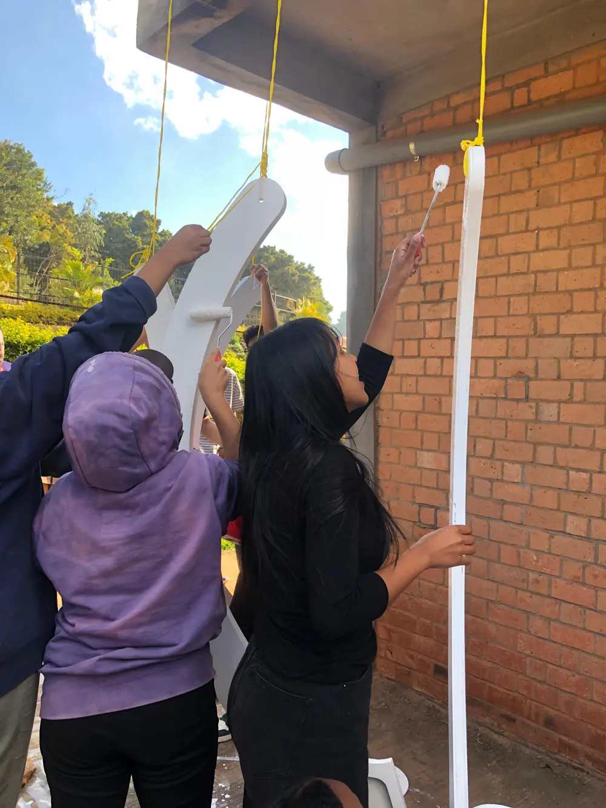
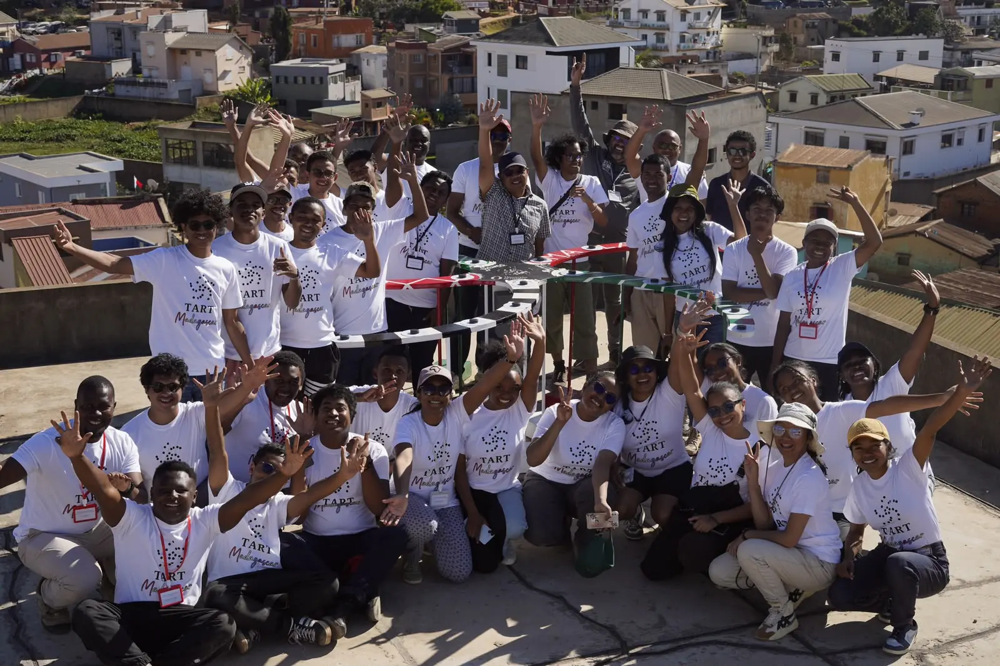
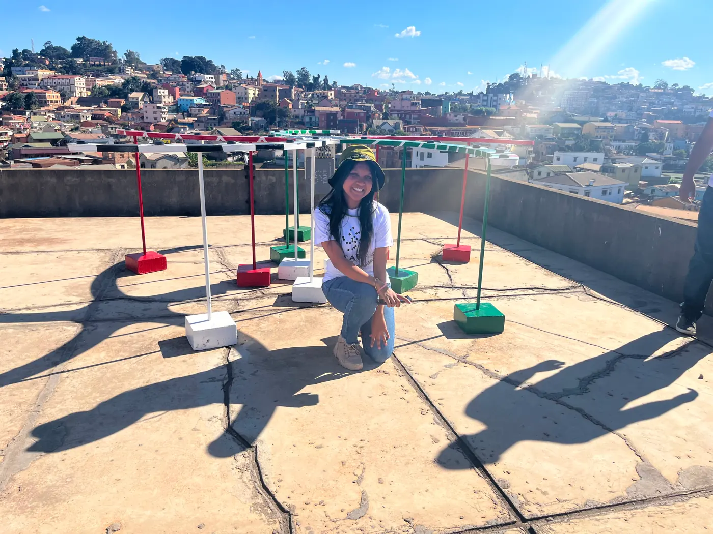
✦ Carte du ciel
I · 06 outils
II · 07 outils
III · 03 outils
Centres d'intérêt de recherche
✦ Recherche · Code
Cheffe d'une équipe de 4 : 2 astéroïdes candidats provisoires identifiés sur des images Pan-STARRS.
Application qui calcule la phase, l'illumination et l'âge de la Lune pour n'importe quelle date, avec une version web et une Lune 3D interactive.
Génération de signaux, transformée de Fourier rapide, filtrage et reconstruction, avec une application à la détection de la période d'étoiles variables.
Exploration de catalogues de galaxies, courbes de lumière, évolution stellaire et rayonnement du corps noir à partir de données réelles et simulées.
✦ Poursuivre
Transmettre, chercher et créer : trois domaines qui se nourrissent l'un l'autre.